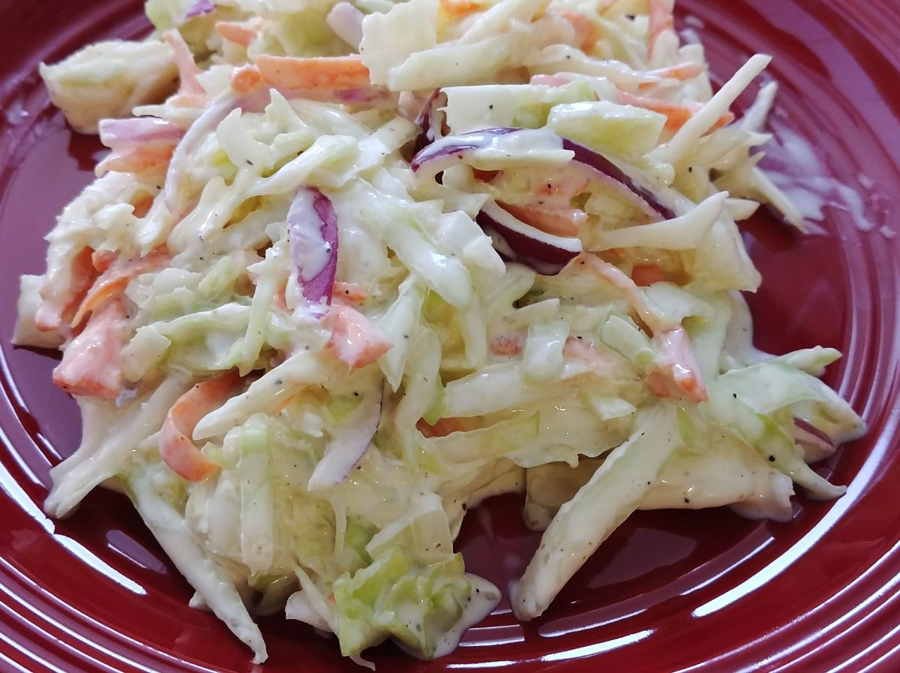

Coleslaw

Simple and tasty coleslaw that'll have everyone asking for the recipe!
Ingredients
- 1/2 cup cabbage
- 4 1/2 cups carrot
- 1 Tbsp mayonaise
Steps
- Heat omayonaise in a pan heated to medium high
- Add carrot and stir for 1-2 minutes
- Add cabbage, cover and let it sit for 10 minutes